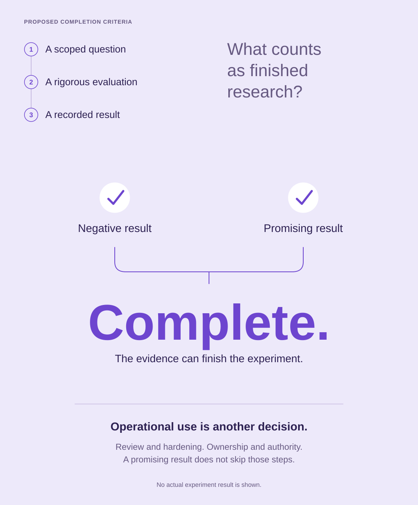

Guided focus
Make one judgment dominant. Keep the process and the next decision subordinate.

Three small prerequisites lead into two equally placed outcomes and a single oversized completion state. The generous empty space belongs to this one distinction; the full architecture is left to the supporting notes.
Text equivalent and limits
A scoped question, rigorous evaluation and recorded result are proposed criteria for completed research. Negative and promising results converge on the same Complete state. Operational use is a separate decision involving review, hardening, ownership and authority. No actual experiment result is shown.
This approved static reference interprets a control-program proposal. It is calibration material, not a deployed system or factual input for another artifact.